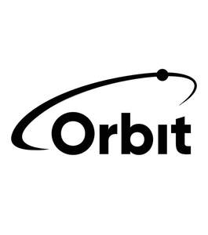

Trade Mark Journal No.2025/024 13 June 2025
UK00004175147 18 March 2025 (9,38)

- Class 9
- Scientific apparatus and instruments; Nautical apparatus and instruments; Surveying apparatus and instruments; Photographic apparatus and instruments; Cinematographic apparatus and instruments; Optical apparatus and instruments; Weighing apparatus and instruments for standard unit; Measuring apparatus and instruments; Signalling apparatus and instruments; Checking (supervision) apparatus and instruments; Teaching apparatus and instruments; Apparatus and instruments for conducting electricity; Apparatus and instruments for switching electricity; Apparatus and instruments for transforming electricity; Apparatus and instruments for accumulating electricity; Apparatus and instruments for regulating electricity; Apparatus and instruments for controlling electricity; Apparatus for recording sound; Apparatus for recording images; Apparatus for transmission of images; Apparatus for transmission of sound; Apparatus for reproduction of sound; Apparatus for reproduction of images; Magnetic data carriers, recording discs; Digital recording media; Compact discs; DVDs; mechanisms for coin-operated apparatus; computer software; Programs recorded on electronic circuits for amusement apparatus with liquid crystal screens; Computer e-commerce software to allow users to perform electronic business transactions via a global computer network; Computer communication software to allow customers to access bank account information and transact bank business; Computer programs for providing an all-around view for a vehicle; coin-operated mechanisms; disc players; compact discs [audio-video]; compact discs [read-only memory]; computer game programs; Games cartridges for use with electronic games apparatus; Computer game discs; Computer game software; Computer games programs downloaded via the internet [software]; computer games programs recorded on tapes (software); computer programmes for interactive television and for interactive games and/or quizzes; Electronic game software; Electronic game programs; interactive multimedia computer game programs; programmed video games contained on cartridges [software]; pre-recorded DVDs; Downloadable templates for designing audiovisual presentations; Computer application software for TV; Hardware (Computer -); Peripherals adapted for use with computers; Software for interactive television; Software for generating virtual images; Digital video discs; digital versatile discs; High definition televisions; motion pictures; Multimedia devices; Devices for streaming media content over local wireless networks.
- Class 38
- Telecommunication services; Broadcasting services; Webcasting; Data streaming services; Video, audio and television streaming services; Streaming audio and video material on the Internet; Message transmittal (Electronic -); television broadcasting services; Broadcasting of esports events; Broadcasting of television programs via the Internet; Broadcasting of video and audio programming over the Internet; Broadcasting of television programs using video-on-demand and pay-per-view television services; Interactive television and radio broadcasting; communication services; Videocasting; Transmission of data via the Internet; Transmission of short messages [SMS], images, speech, sound, music and text communications between mobile telecommunications devices; providing access to multimedia content online; Video-on-demand transmission services; Provision of access to an Internet portal featuring video-on-demand programs; telecommunications services; television and radio broadcasting; Communication via computer terminals; Communication via virtual private networks; Telegrams (Communications by -); Communication by telephone; Computer-aided transmission of messages and images; Information about telecommunications; news agencies; Telecommunication channels (Providing -) for teleshopping services; Providing telecommunications connections to a global computer network or databases; Rental of telecommunications equipment; Rental of wireless communication systems; Rental of broadcasting equipment; Video teleconferencing; wireless communication services; Cable and satellite broadcasting services; Cable and satellite transmission services; Satellite communications services; Information about telecommunications; Providing information about wireless communication; telecommunications routing and junction services; Transmission of digital information; Wireless voice mail services; Audio and video broadcasting services provided via the Internet; Video transmission services; video communication services; video messaging services; wire services; Wireless telephone services; Wireless communications services; Wireless voice mail services.
OCC Establishment
Representative: Bayer & Norton Business Consultant Ltd